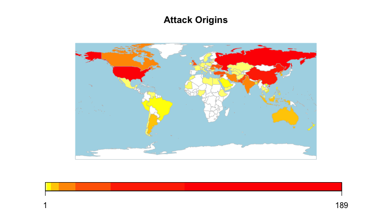
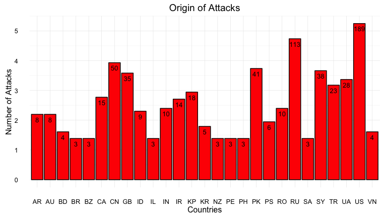

Where on Earth Are the Threat Actors?
The web is crawling with anonymous, amoral and advanced adversaries. We know little about cyber incidents because the information is difficult to obtain and victims lack incentives to publish their findings. The fog of war on the internet is dense but the Veris Community Database (VCDB) is attempting to illuminate the details of events across four features. The VERIS (Vocabulary for Event Reporting and Information Sharing) was started by Verizon Enterprise to provide a standard taxonomy of events. Below is a table of incident data features in the database. This post’s focus are the actors, highlighted in red.
| Action | Asset | Actor | Attribute |
|---|---|---|---|
| Malware | Server | External | Confidentiality |
| Hacking | Network | Internal | Integrity |
| Social | User Dev | Partner | Availability |
| Physical | Media | Unknown | |
| Misuse | Person | ||
| Error | Kiosk | ||
| Environmental | Unknown | ||
| Unknown |
Threat Actor
All the world’s a stage,
And all the men and women merely players;
They have their exits and their entrances,
And one man in his time plays many parts,
His acts being seven ages.
- As You Like It, (II.VII.139-143)
What is a threat actor? The National Initiative for Cybersecurity Careers and Studies describes a threat actor as “an individual, group, organization, or government that conducts or has the intent to conduct detrimental activities.” One way to classify threat actors is to look at their vector of attack. For example, if they gained illicit access by being granted permission, breaking in or partnering with the target. Below you can see that almost half of all breaches are by external groups. Close to 40% are by insiders and relatively few happen through partners. Interestingly enough, there are no reported incidents of unknown threat vectors.

To give a better idea of who these actors are let’s look at the country of origin for the attacks. Before diving into the image below, note that 2372 or nearly 77% of all incidents have an unknown origin of attack. Unlike the vector of attack, the country of origin is incredibly difficult to pin down without corroborating human intelligence. Below, are the top 27 countries of origin for known attacks:

The United States leads the pack with Russia at about 60% of the number of attacks coming from the US, and China based attacks less than a third of US based attacks. To get an idea of how dominant the main origins of attack are, here’s a world heat map by origin of attack:

It’s probably not a huge surprise that the US, Russia and China are leaders in origin of attack. They are often cited as the leading countries in computer network talent, government supported hacking and internet penetration. The picture gets a little more interesting when you use a log scale on the Origins of Attack graph:

This makes two important observations salient. First, projecting power into cyberspace follows the power law. Second, there are some actor origins punching considerably above their weight.
- Pakistan
- Syria
- Great Britain
- Ukraine
- Turkey
- North Korea
- Iran
- Canada
These countries are all highly active origins of attack. With the exceptions of Pakistan, these are not countries with very large populations. This indicates that some mid sized countries can asymmetrically project power online to a much greater extent than their real world presence would suggest.